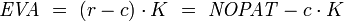
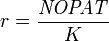
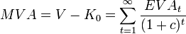

Economic Value Added
| Corporate finance |
|---|
| Working capital |
| Sections |
| Societal components |
{kind=link}
In corporate finance, Economic Value Added or EVA, is an estimate of a firm's economic profit – being the value created in excess of the required return of the company's investors (being shareholders and debt holders). Quite simply, EVA is the profit earned by the firm less the cost of financing the firm's capital. The idea is that value is created when the return on the firm's economic capital employed is greater than the cost of that capital. This amount can be determined by making adjustments to GAAP accounting. There are potentially over 160 adjustments that could be made but in practice only five or seven key ones are made, depending on the company and the industry it competes in.
Contents
[hide]Calculating EVA[edit source | editbeta]
EVA is net operating profit after taxes (or NOPAT) less a capital charge, the latter being the product of the cost of capital and the economic capital. The basic formula is:
- 
where:
- , is the Return on Invested Capital (ROIC);
- is the weighted average cost of capital (WACC);
- is the economic capital employed;
- NOPAT is the net operating profit after tax, with adjustments and translations, generally for the amortization of goodwill, the capitalization of brand advertising and others non-cash items.
EVA Calculation:
EVA = net operating profit after taxes – a capital charge [the residual income method]
therefore EVA = NOPAT – (c × capital), or EVA = (ROIC-WACC)* Invested capital or alternatively
EVA = (r x capital) – (c × capital) so that
EVA = (r-c) × capital [the spread method, or excess return method]
where:
r = rate of return, and
c = cost of capital, or the Weighted Average Cost of Capital (WACC).
NOPAT is profits derived from a company’s operations after cash taxes but before financing costs and non-cash bookkeeping entries. It is the total pool of profits available to provide a cash return to those who provide capital to the firm.
Capital is the amount of cash invested in the business, net of depreciation. It can be calculated as the sum of interest-bearing debt and equity or as the sum of net assets less non-interest-bearing current liabilities (NIBCLs).
The capital charge is the cash flow required to compensate investors for the riskiness of the business given the amount of economic capital invested.
The cost of capital is the minimum rate of return on capital required to compensate investors (debt and equity) for bearing risk, their opportunity cost.
Another perspective on EVA can be gained by looking at a firm’s return on net assets (RONA). RONA is a ratio that is calculated by dividing a firm’s NOPAT by the amount of capital it employs (RONA = NOPAT/Capital) after making the necessary adjustments of the data reported by a conventional financial accounting system.
EVA = (RONA – required minimum return) × net investments
If RONA is above the threshold rate, EVA is positive.
Comparison with other approaches[edit source | editbeta]
Other approaches along similar lines include Residual Income Valuation (RI) and residual cash flow. Although EVA is similar to residual income, under some definitions there may be minor technical differences between EVA and RI (for example, adjustments that might be made to NOPAT before it is suitable for the formula below). Residual cash flow is another, much older term for economic profit. In all three cases, money cost of capital refers to the amount of money rather than the proportional cost (% cost of capital); at the same time, the adjustments to NOPAT are unique to EVA.
Although in concept, these approaches are in a sense nothing more than the traditional, commonsense idea of "profit", the utility of having a separate and more precisely defined term such as EVA is that it makes a clear separation from dubious accounting adjustments that have enabled businesses such as Enron to report profits while actually approaching insolvency.
Other measures of shareholder value include:
[1]
Relationship to market value added[edit source | editbeta]
The firm's market value added, or MVA, is the discounted sum (present value) of all future expected economic value added:
- 
Note that MVA = PV of EVA.
More enlightening is that since MVA = NPV of Free cash flow (FCF) it follows therefore that the
NPV of FCF = PV of EVA;
since after all, EVA is simply the re-arrangement of the FCF formula.
Integrating EVA and PBC[edit source | editbeta]
Recently, Mocciaro Li Destri, Picone & Minà (2012)[2] proposed a performance and cost measurement system that integrates the EVA criteria with Process Based Costing (PBC). The EVA-PBC methodology allows us to implement the EVA management logic not only at the firm level, but also at lower levels of the organization. EVA-PBC methodology plays an interesting role in bringing strategy back into financial performance measures.
See also[edit source | editbeta]
- Business valuation
- Free cash flow
- Enterprise value
- Opportunity cost
- Value added
- Weighted average cost of capital
- Residual Income Valuation
References[edit source | editbeta]
- ^ Akbar Javadian Kootanaee ,else (2012). A Comparison of Performance Measures for Finding the Best Measure of Business Entity Performance. Journal of Finance and Investment Analysis, vol. 1, no.4, 2012, 27-35.http://ssrn.com/abstract=2253220
- ^ Mocciaro Li Destri A., Picone P. M. & Minà A. (2012), Bringing Strategy Back into Financial Systems of Performance Measurement: Integrating EVA and PBC, Business System Review, Vol 1., Issue 1. pp.85-102 http://papers.ssrn.com/sol3/papers.cfm?abstract_id=2154117.
- G. Bennett Stewart III (1991). The Quest for Value. HarperCollins.
- Erik Stern. The Value Mindset. Wiley.
- Joel Stern and John Shiely. The EVA Challenge. Wiley.
- Al Ehrbar. EVA, the Real Key to Creating Wealth. Wiley.
External links[edit source | editbeta]
- [1] Free online PRVit analysis form shares on US Stockmarket
- A Reading List on EVA/Value Based Management from Robert Korajczyk
- Economic Value Added from EVA Dimensions LLC
- Economic Value Added (EVA), Prof. Aswath Damodaran
- EVA valuation tutorial from valuatum.com
- Understanding Economic Value Added, investopedia.com
- All About EVA, investopedia.com
- Economic Value Added: A simulation analysis of the trendy, owner-oriented management tool, Timo Salmi and Ilkka Virtanen, 2001
- The Origins of EVA Chicago-Booth magazine
| ||||||||||||||||||||||